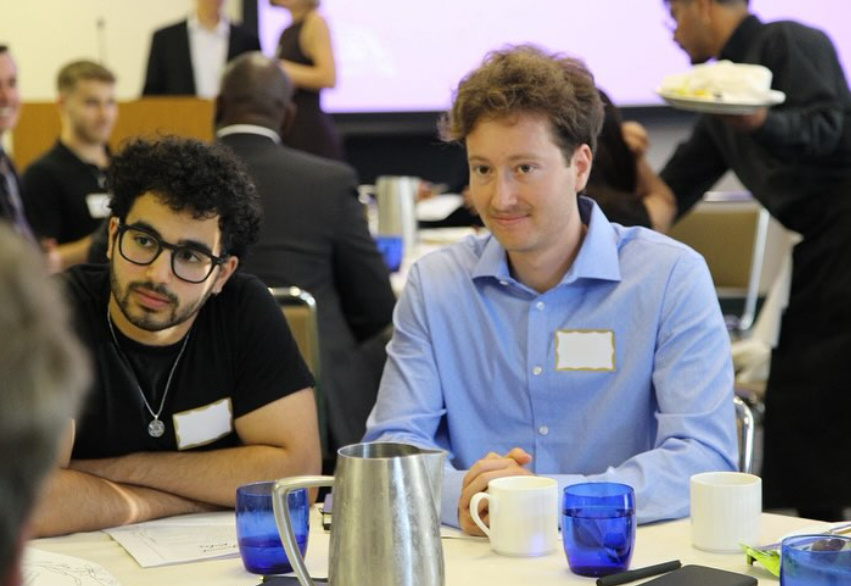
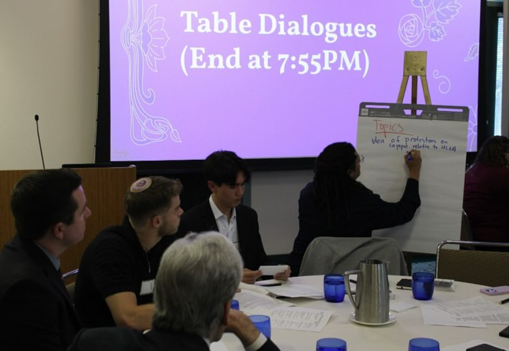
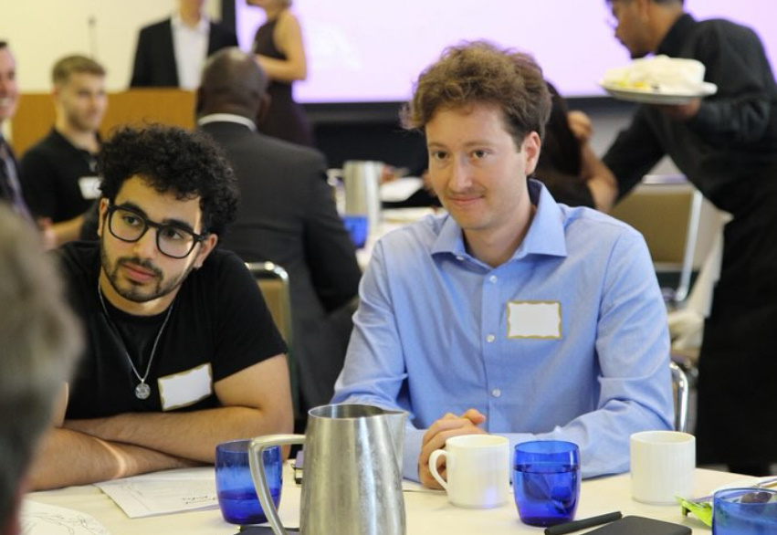
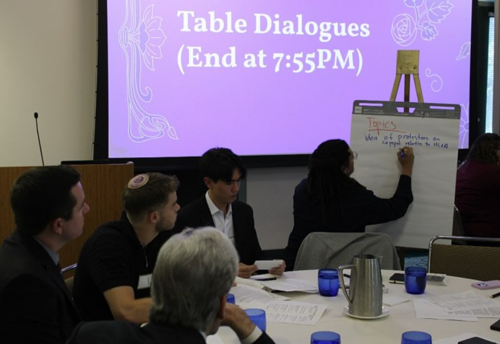

Common Ground Collective
Est. 2024
 



Addressing the Communication Gap
America is more divided than ever. At CGC, we work to bridge the gap between a polarized country. Our goal is to foster understanding and enable conversations where people are empowered to coalesce behind policy proposals and solutions rather than being caught up in disagreement.
Finding common ground is the way forward.
Read More on the About PageWhat is a Public Forum?
CGC's Public Forums provide a safe space to discuss the issues that shape and affect our lives. These forums stand out against other discussion platforms primarily due to their focus on active listening and intentional team-building. Rather than concentrating on swaying initial opinions or engaging in debates, our Public Forums aim to foster understanding, broaden perspectives, and reach common ground.
Our forums are not about winning or losing. They are meant to be havens for free expression, where individuals can articulate their viewpoints, listen to others, and engage in respectful discourse. The emphasis is on explaining and understanding diverse perspectives and promoting a social norm of mutual respect and learning. In essence, our forums are more than just platforms for discussion; they are catalysts for growth, understanding, and unity in our increasingly divided world. They embody the belief that through conversation and open-mindedness, we can find common ground.
Finding common ground is the way forward.
How Do Public Forums Work?
All Public Forums have a moderator, who is usually a CGC board member. The moderator must ensure that discussions remain respectful and that an environment of free speech is upheld.
Rules
1. Hello
Your Voice Matters!
The Common Ground Collective serves all of you. To do what we do, we rely on your opinions. Please fill out our Public Forum Feedback Survey so that we can plan future forums that meet your wants and needs.
We are all in this together, as a collective!
Feedback Survey